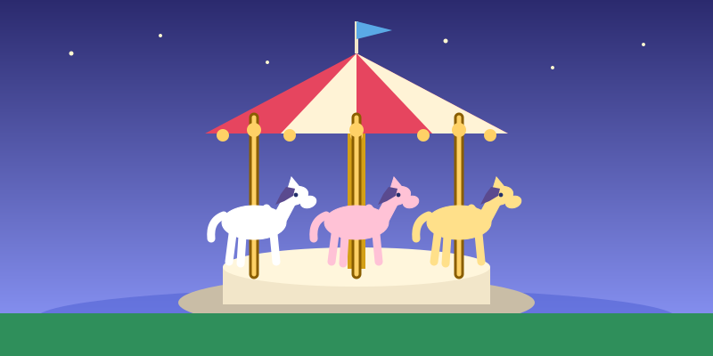

園區一覽 Lands at a Glance
樂園現在有八個主題園區，每個園區都有自己的遊樂設施、表演、角色見面和餐廳。 The park now has eight themed lands. Here is my table:

| 園區 Land | English name | 開幕年份 Year opened | 我最想玩的設施 My favourite attraction |
|---|---|---|---|
| 美國小鎮大街 | Main Street, U.S.A. | 2005 | 小鎮大街古董車、樂園鐵路 |
| 探險世界 | Adventureland | 2005 | 森林河流之旅、獅子王慶典 |
| 幻想世界 | Fantasyland | 2005 | 小小世界、小熊維尼歷險之旅 |
| 明日世界 | Tomorrowland | 2005 | 星戰極速穿梭、鐵甲奇俠飛行之旅 |
| 反斗奇兵大本營 | Toy Story Land | 2011 | 沖天遙控車 |
| 灰熊山谷 | Grizzly Gulch | 2012 | 灰熊山極速礦車 |
| 迷離莊園 | Mystic Manor | 2013 | 迷離大宅 |
| 魔雪奇緣世界 | World of Frozen | 2023 | 魔雪奇幻之旅、雪嶺滑雪橇 |
有部分設施設有身高限制（例如「鐵甲奇俠飛行之旅」需102厘米或以上、「雪嶺滑雪橇」需95厘米或以上），出發前可以先在官網查看。
遊樂設施 Attractions
刺激機動遊戲 Thrill Rides
- 灰熊山極速礦車 Big Grizzly Mountain Runaway Mine Cars — 在灰熊山谷，會突然向前衝又突然向後退，超刺激。
- 星戰極速穿梭 Hyperspace Mountain — 在明日世界的室內過山車，全黑環境加上星球大戰音樂。
- 沖天遙控車 RC Racer — 在反斗奇兵大本營，是半圓形軌道的「U 形滑板」，離心力好強。
- 雪嶺滑雪橇 — 在魔雪奇緣世界的過山車，高度限制95厘米，適合比較細的小朋友。
輕鬆合家歡 Family Fun
- 小小世界 "it's a small world" — 坐船看世界各地的公仔，音樂不停在腦海響起。
- 小熊維尼歷險之旅 The Many Adventures of Winnie the Pooh — 坐蜜糖罐車遊百畝森林。
- 迷離大宅 Mystic Manor — 迷離莊園的重點設施，效果非常精緻。
- 森林河流之旅 Jungle River Cruise — 探險世界的坐船之旅，船長會講很多笑話。
- 小鎮大街古董車 Main Street Vehicles — 在美國小鎮大街坐古董車，慢慢行一圈。
娛樂表演 Live Entertainment
樂園的表演同樣精彩（The shows are great too）：
| 表演 Show | 地點 Where | 類型 Type |
|---|---|---|
| 迪士尼星夢光影之旅 | 奇妙夢想城堡 | 夜間煙花及投影匯演 |
| 迪士尼尋夢奇緣 | 奇妙夢想城堡中央大舞台 | 日間歌舞表演 |
| 迪士尼魔法書房 | 幻想世界 迪士尼故事劇場 | 室內大型音樂劇 |
| 獅子王慶典 | 探險世界 原野劇場 | 室內音樂劇、雜技及火舞 |
| 魔海奇緣凱旋慶典 | 探險世界 樂韻叢林 | 戶外小型音樂劇 |
| 森林小天地 | 魔雪奇緣世界 | 室內互動戲劇體驗 |
我的最愛 Top Three
如果要我排先後次序（My ranking）：
- 魔雪奇幻之旅（魔雪奇緣世界）— 阿德爾王國的場景做得很靚。
- 灰熊山極速礦車（灰熊山谷）— 驚喜位很多，一定要玩兩次。
- 迪士尼星夢光影之旅（奇妙夢想城堡）— 一日遊的最佳結尾。
資料來源 Sources
- 香港迪士尼樂園官方網站 — 遊樂設施：attractions/theme-park（設施名稱、身高限制）
- 香港迪士尼樂園官方網站 — 奇妙夢想城堡：castle-magical-dreams
- 維基百科 —「香港迪士尼樂園」：zh.wikipedia.org/wiki/香港迪士尼樂園（八個園區及各園區開幕年份）
- 瀏覽日期 Date of access：2026年10月27日